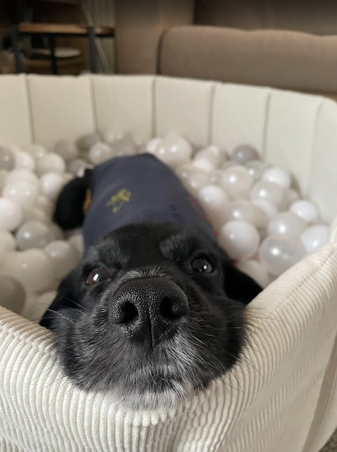

Why Cocker Spaniels Make Great Pets
Cocker Spaniels are known for their affectionate nature and playful spirit. They thrive in family environments and are great with children. Their medium size makes them adaptable to various living situations, from apartments to houses with gardens.
With their high energy levels, Cocker Spaniels require regular exercise and mental stimulation. They enjoy activities like fetch, agility training, and long walks. Their friendly temperament also makes them excellent companions for other pets.
Originally bred as hunting dogs, Cocker Spaniels have a natural instinct to explore and sniff out their surroundings. This working heritage means they are intelligent and eager to please, making them highly trainable with the right positive reinforcement techniques.
Their long, silky coats are one of their most recognisable features, coming in a wide variety of colours including golden, black, chocolate, and roan. Regular grooming is essential to keep their coat healthy and tangle-free, and many owners find this bonding time a rewarding part of pet ownership.
Overall, Cocker Spaniels are a wonderful choice for those looking for a loving and energetic canine companion.
